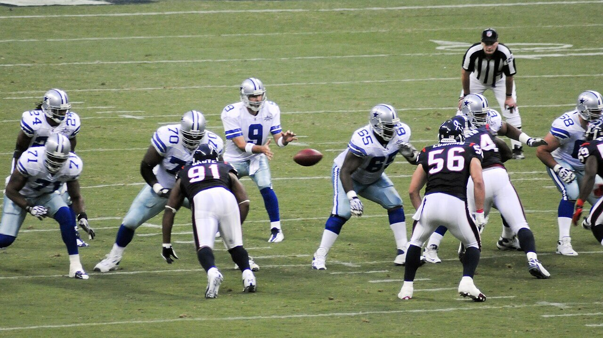

A proximidade de uma nova temporada costuma atrair torcedores que ainda não estão muito familiarizados com a modalidade. Para quem pretende acompanhar o calendário da NFL 2026, da pré-temporada ao início da temporada regular, conhecer a lógica básica do jogo antes de a bola oval entrar em campo torna a experiência muito mais interessante.
As regras do futebol americano podem parecer complicadas para quem está assistindo à NFL pela primeira vez. A transmissão mostra números como “1st & 10”, jogadores entram e saem constantemente, o relógio para em algumas jogadas e continua correndo em outras, enquanto os árbitros anunciam faltas com termos pouco familiares.
Apesar dessa aparência, a lógica principal do esporte é relativamente simples: o time com a bola precisa avançar pelo campo até chegar à end zone adversária, enquanto a defesa tenta impedir o avanço e recuperar a posse.
Compreendendo as descidas, as formas de pontuação e as situações mais comuns, já é possível acompanhar uma partida sem conhecer todos os detalhes do extenso livro de regras.
O essencial para começar a assistir
Antes de aprofundar cada ponto, estas são as regras mais importantes:
- Cada equipe joga com 11 atletas em campo.
- O ataque tem quatro tentativas, chamadas de downs ou descidas, para avançar pelo menos 10 jardas.
- Se conseguir as 10 jardas, o time recebe uma nova série de quatro descidas.
- O touchdown vale seis pontos.
- Um field goal vale três pontos.
- Uma interceptação, um fumble recuperado ou uma falha na quarta descida pode entregar a posse ao adversário.
- A partida tem quatro períodos de 15 minutos, mas costuma durar muito mais por causa das interrupções.
Essa estrutura explica a maior parte do que acontece em campo. As demais regras organizam como o ataque pode avançar, quando uma jogada termina e quais contatos são permitidos.
Como funciona o campo de futebol americano
O gramado possui 100 jardas entre as duas linhas de gol. Em cada extremidade existe uma end zone de 10 jardas, área em que os touchdowns são marcados. Portanto, considerando as duas end zones, o campo completo tem 120 jardas de comprimento.
As marcações laterais indicam a posição da bola. O meio do campo é representado pela linha de 50 jardas, enquanto a numeração diminui em direção às duas end zones. Os postes amarelos ficam atrás de cada end zone e são utilizados nos field goals e pontos extras.
A linha imaginária na qual a bola é posicionada antes de cada jogada é chamada de linha de scrimmage. Ataque e defesa devem permanecer em seus respectivos lados até o snap, movimento em que o center entrega a bola para trás e inicia a jogada.
A regra mais importante: quatro descidas para avançar 10 jardas
O sistema de descidas é o coração do futebol americano.
O ataque recebe quatro tentativas para avançar pelo menos 10 jardas. Cada tentativa começa com o snap e termina quando o jogador com a bola é derrubado, sai do campo, marca pontos ou quando um passe para frente não é completado.
Quando a equipe alcança as 10 jardas necessárias, conquista um first down, mantém a posse e ganha outras quatro descidas.
Um exemplo ajuda a entender:
- 1st & 10: primeira descida, faltando 10 jardas.
- O ataque avança quatro jardas.
- 2nd & 6: segunda descida, faltando seis jardas.
- O ataque avança três jardas.
- 3rd & 3: terceira descida, faltando três jardas.
- O ataque avança cinco jardas e conquista um novo first down.
A expressão mostrada na transmissão sempre informa a descida atual e a distância necessária. “3rd & 8”, por exemplo, significa terceira descida com oito jardas para conquistar uma nova série.
O que acontece na quarta descida
Costuma gerar uma das decisões mais estratégicas da NFL. Se o ataque não alcançar a distância necessária, o adversário recebe a bola no ponto em que a jogada terminou. Isso é chamado de turnover on downs.
Por esse motivo, uma equipe pode escolher entre três caminhos:
- Tentar a jogada e buscar o first down.
- Chutar um field goal, caso esteja próxima dos postes.
- Executar um punt para mandar a bola para longe e dificultar o início da campanha adversária.
Em situações de desvantagem no placar ou quando falta pouca distância, os treinadores costumam ser mais agressivos. Quando o time está longe da end zone e quer proteger sua posição de campo, o punt é a decisão mais conservadora.
Como são marcados os pontos
Touchdown: seis pontos
O touchdown acontece quando um jogador leva a bola para dentro da end zone adversária ou recebe um passe legal dentro dela. Não é necessário encostar a bola no chão: basta ter a posse e fazer com que a bola cruze o plano vertical da linha de gol em uma corrida.
Depois do touchdown, a equipe ganha uma tentativa adicional.
Ponto extra: um ponto
O time pode chutar a bola entre as traves para somar um ponto. Na NFL, o snap dessa tentativa acontece na linha de 15 jardas, resultando em um chute de aproximadamente 33 jardas.
Conversão de dois pontos
Em vez do chute, o ataque pode tentar entrar novamente na end zone em uma jogada iniciada na linha de duas jardas. Se conseguir, soma dois pontos. Essa escolha é comum quando a situação do placar exige uma pontuação maior.
Field goal: três pontos
O field goal vale três pontos e acontece quando o kicker acerta um chute acima do travessão e entre os postes. Quanto mais distante estiver a bola, mais difícil será a tentativa.
Safety: dois pontos
Normalmente ocorre quando o jogador com a posse é derrubado dentro da própria end zone ou quando o ataque comete determinadas infrações nessa área. A defesa recebe dois pontos e, em seguida, também fica com a bola.
Corrida, passe e lateral: como o ataque avança
Pode avançar principalmente de duas formas.
Na corrida, o quarterback entrega ou lança a bola para trás a um running back, que tenta encontrar espaços entre os bloqueadores.
Na jogada aérea, o quarterback lança um passe para frente em direção a um recebedor. Apenas um passe para frente pode ser realizado em cada descida, e ele precisa sair de um ponto atrás da linha de scrimmage.
Passes laterais ou para trás são diferentes. Eles podem acontecer em qualquer região do campo e mais de uma vez na mesma jogada. Porém, se uma lateral cair no chão, a bola continua viva e pode ser recuperada pelo adversário.
O quarterback é o principal responsável por receber as instruções, identificar a defesa e distribuir a bola. A relevância da posição pode ser observada na carreira de Patrick Mahomes, por exemplo, marcada pela capacidade de criar jogadas mesmo quando a proteção ou a estratégia inicial não funcionam.
Quando uma recepção é válida
Para completar uma recepção na NFL, o jogador precisa controlar a bola e tocar o campo com os dois pés — ou com outra parte do corpo equivalente — dentro dos limites.
Em algumas situações, também é necessário demonstrar que houve tempo ou movimento suficiente para completar o processo da recepção. Essa parte da regra pode gerar revisões, especialmente quando o recebedor cai enquanto segura a bola ou é atingido imediatamente.
Se o passe para frente toca o chão antes de ser controlado, ele é considerado incompleto. A jogada termina, nenhuma jarda é conquistada e o ataque perde uma descida.
Quando o jogador está derrubado
Na NFL, um jogador que cai sozinho geralmente pode se levantar e continuar avançando. Para ser considerado derrubado por contato, ele normalmente precisa tocar o chão com uma parte do corpo diferente das mãos ou dos pés em consequência do contato de um adversário.
Existem exceções. Um quarterback que ajoelha para gastar o relógio ou um jogador que claramente se entrega encerra voluntariamente a jogada.
Interceptação, fumble e turnovers
Turnover é qualquer situação em que o ataque perde a posse para o adversário.
A interceptação acontece quando um defensor captura um passe lançado pelo quarterback. Depois da recepção, ele pode correr em direção à end zone adversária e até marcar um touchdown defensivo.
O fumble ocorre quando um jogador perde o controle da bola antes de a jogada terminar. Enquanto ela estiver solta, atletas das duas equipes podem tentar recuperá-la.
Também existe o turnover on downs, registrado quando o ataque não consegue alcançar o first down em sua quarta tentativa.
Essas mudanças de posse estão entre os lances mais importantes de uma partida, pois podem interromper uma campanha promissora e entregar ao adversário uma posição de campo favorável.
A duração dos jogos
Uma partida tem quatro quartos de 15 minutos, totalizando 60 minutos no cronômetro oficial. Entretanto, o jogo real costuma ocupar aproximadamente três horas devido às pausas, comerciais, revisões e interrupções entre as jogadas.
O relógio pode parar após passes incompletos, pontuações, pedidos de tempo, mudanças de posse e determinadas saídas de campo. Em outras situações, ele continua correndo mesmo depois que a jogada termina.
Cada equipe possui três pedidos de tempo por metade do jogo. Além disso, existe uma parada automática quando o relógio chega à região dos dois minutos no segundo e no quarto períodos.
O ataque também precisa iniciar a próxima jogada antes do fim do play clock. Caso demore demais, recebe uma falta por atraso de jogo.
Ataque, defesa e times especiais
Cada equipe pode ter apenas 11 jogadores em campo, mas as substituições são permitidas entre as jogadas. Por isso, os atletas são divididos em três unidades.
No ataque, os principais grupos são:
- Quarterback: organiza e executa as jogadas.
- Linha ofensiva: protege o quarterback e abre espaços para as corridas.
- Running backs: carregam a bola e também podem receber passes.
- Wide receivers: correm rotas para receber lançamentos.
- Tight end: combina funções de bloqueador e recebedor.
Na defesa:
- Linha defensiva: pressiona o quarterback e combate as corridas.
- Linebackers: atuam no centro da defesa, ajudando contra passes e corridas.
- Cornerbacks: marcam principalmente os wide receivers.
- Safeties: protegem a parte mais profunda do campo.
Os times especiais entram em kickoffs, punts e tentativas de field goal. Entre os especialistas estão kicker, punter, retornadores e long snapper.
Como as regras influenciam as estratégias dos times
Elas não servem apenas para organizar o jogo: elas determinam praticamente todas as decisões estratégicas. Descida, distância, posição no campo, placar e tempo restante influenciam a escolha de cada jogada. Em uma terceira descida curta, por exemplo, o ataque pode apostar em uma corrida; em uma terceira descida longa, o passe se torna mais provável. Na quarta descida, o treinador precisa decidir entre arriscar o avanço, tentar um field goal ou executar o punt.
O treinador principal, chamado de head coach, supervisiona a estratégia geral, administra o relógio, utiliza os pedidos de tempo e toma decisões importantes, como desafios de arbitragem e tentativas em quartas descidas. Ao lado dele trabalham os coordenadores. O coordenador ofensivo organiza as jogadas do ataque, buscando explorar os pontos fracos da defesa adversária. O coordenador defensivo prepara coberturas, marcações e pressões sobre o quarterback. Há ainda o coordenador de times especiais, responsável por kickoffs, punts, retornos e chutes aos postes.
Como as substituições são permitidas entre as jogadas, os treinadores também montam formações específicas para cada situação. Um time pode colocar mais recebedores quando precisa avançar rapidamente ou utilizar jogadores mais pesados para correr poucas jardas. Entender as regras, portanto, ajuda a perceber que cada chamada representa uma escolha entre risco, segurança, tempo e posição de campo.
As principais faltas
Quando ocorre uma infração, os árbitros lançam uma bandeira amarela. A penalidade pode fazer uma equipe avançar ou recuar no campo, repetir a descida, perder uma tentativa ou conceder um first down automático.
Entre as faltas mais comuns estão:
- False start: um jogador do ataque se movimenta ilegalmente antes do snap. Penalidade de cinco jardas.
- Offside: um defensor ultrapassa a linha antes do início da jogada. Geralmente custa cinco jardas.
- Holding ofensivo: um bloqueador segura ilegalmente o adversário. Normalmente gera perda de 10 jardas.
- Holding defensivo: contato ilegal que restringe um recebedor. Costuma valer cinco jardas e first down automático.
- Pass interference: contato ilegal que impede uma tentativa legítima de recepção.
- Delay of game: o ataque não inicia a jogada dentro do tempo permitido. Perda de cinco jardas.
- Facemask: um jogador agarra e puxa a grade do capacete do adversário. Penalidade de 15 jardas.
- Roughing the passer: contato ilegal ou excessivo sobre o quarterback depois do passe. Penalidade de 15 jardas e first down automático.
- Unnecessary roughness: contato desnecessário, perigoso ou realizado depois do fim da jogada. Penalidade de 15 jardas.
A aplicação exata depende do local da falta, da equipe infratora e do resultado da jogada. O time prejudicado também pode recusar a penalidade caso o resultado obtido em campo seja mais vantajoso.
Kickoff, punt e fair catch
O kickoff inicia cada metade da partida e também ocorre depois de pontuações. A equipe que recebe pode tentar retornar a bola e conquistar uma posição melhor para o ataque.
A NFL utiliza um formato de kickoff no qual boa parte dos jogadores fica posicionada mais próxima antes do chute. O objetivo é incentivar retornos e reduzir colisões em alta velocidade. As regras sobre alinhamento, zona de aterrissagem e touchback estão entre as que mais recebem ajustes da liga.
No punt, o retornador pode sinalizar um fair catch. Ao fazer o sinal, ele abre mão de correr com a bola, mas ganha o direito de realizar a recepção sem ser atingido.
Como funciona a prorrogação
Na temporada regular, a prorrogação tem limite de 10 minutos. Pelas regras atuais, as duas equipes devem ter oportunidade de possuir a bola, mesmo que o primeiro ataque marque um touchdown, desde que o tempo do período permita.
Depois que as duas equipes tiveram sua oportunidade, a próxima pontuação pode encerrar o jogo. Se o tempo terminar com o placar empatado na temporada regular, a partida termina em empate.
Nos playoffs, não existe empate. Períodos adicionais são disputados até que um vencedor seja definido.
Revisão de vídeo e desafios dos treinadores
Nem toda decisão é definitiva no momento em que os árbitros apitam. Determinadas jogadas podem ser revisadas por vídeo.
Pontuações, turnovers, tentativas de conversão e quartas descidas sem sucesso passam pela supervisão da equipe de replay. Nos minutos finais de cada metade e durante a prorrogação, a cabine é responsável por iniciar as revisões. Fora dessas situações, os treinadores podem desafiar determinadas marcações, correndo o risco de perder um pedido de tempo se a decisão de campo for mantida.
Como acompanhar uma partida sem se perder
Para assistir à NFL sem decorar o livro de regras, concentre-se em quatro informações:
- Qual time tem a posse.
- Qual é a descida.
- Quantas jardas faltam para o first down.
- Quanto tempo resta no jogo.
Depois disso, observe a decisão tomada na quarta descida e a posição da bola no campo. Quanto mais perto da end zone adversária, maior é a chance de o ataque tentar marcar pontos. Quanto mais perto da própria end zone, maior é o risco de um turnover causar um prejuízo imediato.
Termos como blitz, shotgun, sack, red zone e play action ajudam a aprofundar a leitura tática, mas não são indispensáveis no começo. Entendendo downs, pontuação, posse e cronômetro, o espectador já consegue acompanhar a construção das campanhas e perceber por que determinadas jogadas são decisivas.
A NFL pode atualizar detalhes de kickoffs, replay e segurança de uma temporada para outra. A base do futebol americano, porém, permanece a mesma: avançar 10 jardas em até quatro descidas, proteger a bola e transformar boas posições de campo em pontos.
Entender as regras muda a forma de acompanhar os esportes
Não é necessário decorar todo o regulamento da NFL para aproveitar uma partida. O mais importante é entender a relação entre posse de bola, descidas, jardas, posição de campo, cronômetro e pontuação. A partir dessa base, decisões como arriscar uma quarta descida, tentar um field goal ou gastar o relógio passam a fazer sentido.
Esse princípio também vale para outras modalidades. Conhecer as principais regras do handebol, por exemplo, ajuda a compreender exclusões de dois minutos, jogo passivo, tiro de sete metros e a movimentação próxima à área. Da mesma forma, entender as regras do futsal permite acompanhar melhor as faltas acumuladas, o uso do goleiro-linha, os tiros livres e a dinâmica acelerada das substituições.
Cada esporte possui particularidades, mas todos apresentam uma lógica própria que organiza as decisões dos jogadores e treinadores. Quando o torcedor entende esse funcionamento, deixa de observar apenas o resultado da jogada e começa a perceber estratégia, risco, execução e contexto.
Na NFL, essa leitura começa com uma ideia central: o ataque precisa avançar pelo menos 10 jardas em até quatro descidas. A partir daí, todo o restante se encaixa. Proteger a bola, administrar o relógio e transformar boas posições de campo em pontos são os elementos que conduzem uma partida de futebol americano.